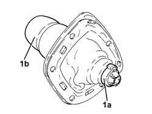

2127A20 COVER OF CONTROL LEVER/HANDLE FOR MANUAL GEARBOX WITH HYDRAULIC SELECTION - R R
- Path
- Procedures > 21 GEARBOX UNIT > 2127 HYDRAULIC TRANSMISSION EXTERNAL LINKAGE > 2127A HYDRAULIC TRANSMISSION EXTERNAL LINKAGE > 2127A20 COVER OF CONTROL LEVER/HANDLE FOR MANUAL GEARBOX WITH HYDRAULIC SELECTION - R R
- Kind
- repair procedure (removal / refitting; the operation number is the code)
- Applies to
- engines: 2.0 JTS; all production periods; only with equipment: Smart gearbox
- Interactive page
- https://sloeber94.github.io/elrnDB-aGt/en/#/125001275
Applies to: engines: 2.0 JTS; all production periods
 Removing
Removing
 Refitting
Refitting- Loosen the band (1a) and separate the electro-hydraulic selection manual gearbox control grip (1b) from the trim.

Applies to: engines: 2.0 JTS; all production periods
Refitting
Removing- Assemble the electro-hydraulic selection manual gearbox control grip and the trim and secure them using the bands.
- Op. 2127A16 PANEL OF CONTROL LEVER FOR MANUAL GEARBOX WITH HYDRAULIC SELECTION - R R
- Connect the negative battery terminal (-).